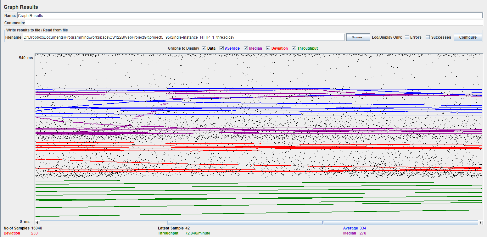
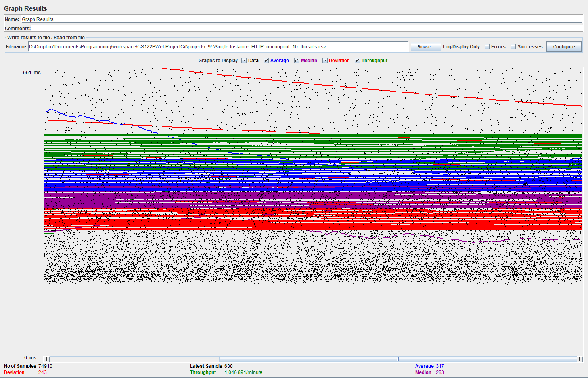
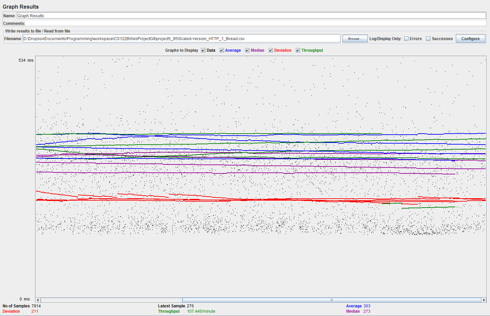
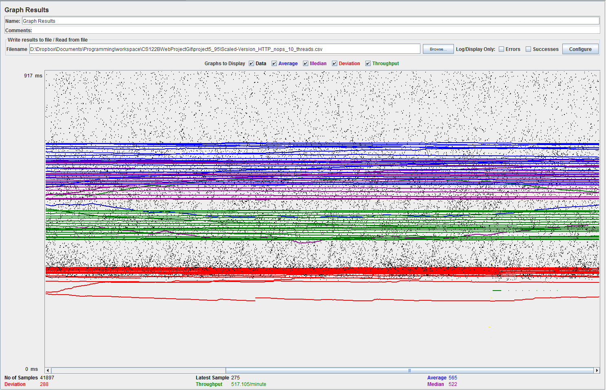

| Single-instance version cases | Graph Results Screenshot | Average Query Time(ms) | Average Search Servlet Time(ms) | Average JDBC Time(ms) | Analysis |
| Case 1: HTTP/1 thread |  | ?? | ?? | ?? | -- |
| Case 2: HTTP/10 threads | |
?? | ?? | ?? | -- |
| Case 3: HTTPS/10 threads | |
?? | ?? | ?? | -- |
| Case 4: HTTP/10 threads/No prepared statements | |
?? | ?? | ?? | -- |
| Case 5: HTTP/10 threads/No connection pooling |  | ?? | ?? | ?? | -- |
| Scaled version cases | Graph Results Screenshot | Average Query Time(ms) | Average Search Servlet Time(ms) | Average JDBC Time(ms) | Analysis |
| Case 1: HTTP/1 thread |  | ?? | ?? | ?? | -- |
| Case 2: HTTP/10 threads |  |
?? | ?? | ?? | -- |
| Case 3: HTTP/10 threads/No prepared statements |  | ?? | ?? | ?? | -- |
| Case 4: HTTP/10 threads/No connection pooling |  |
?? | ?? | ?? | -- |